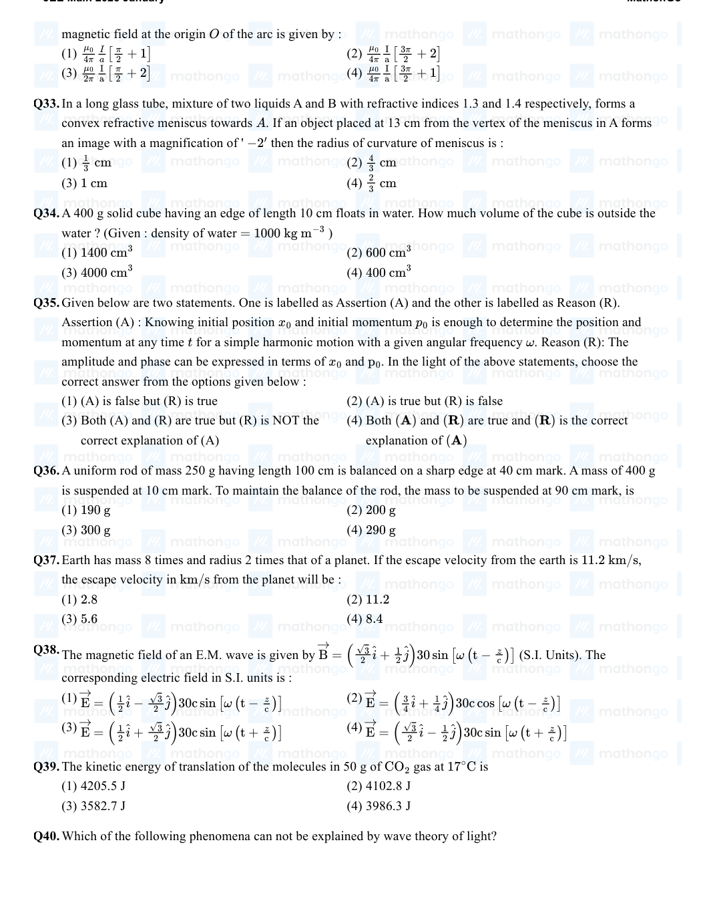
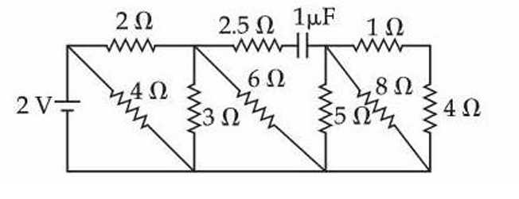

Filter questions
Q1
CHEM-2021-0101-S1-Q046
2021 | 20 Jul | Shift 1
—
MCQ
Which among the above compound/s does/do not form Silver mirror when treated with Tollen's reagent?
Answer: C
Q2
CHEM-2025-0101-S1-Q032
2025 | 22 Jan | Shift 1
—
MCQ
Given is a thin convex lens of glass (refractive index μ ) and each side having radius of curvature R. One side is polished for complete reflection. At what distance from the lens, an object be placed on the optic axis so that the image gets formed on the object itself?
Answer: D
Q3
CHEM-2025-0101-S1-Q042
2025 | 22 Jan | Shift 1
—
MCQ
In the diagram given below, there are three lenses formed. Considering negligible thickness of each of them as compared to |R1| and |R2|, i.e., the radii of curvature for upper and lower surfaces of the glass lens, the power of the combination is

Answer: D
Q4
CHEM-2025-0101-S1-Q046
2025 | 22 Jan | Shift 1
—
MCQ
The driver sitting inside a parked car is watching vehicles approaching from behind with the help of his side view mirror, which is a convex mirror with radius of curvature R = 2 m. Another car approaches him from behind with a uniform speed of 90 km/hr. When the car is at a distance of 24 m from him, the magnitude of the acceleration of the image of the car in the side view mirror is ' a '. The value of 100 a is _______ m/s2.

Answer: Option 8
Q5
CHEM-2025-0101-S2-Q031
2025 | 22 Jan | Shift 2
—
MCQ
A transparent film of refractive index, 2.0 is coated on a glass slab of refractive index, 1.45. What is the minimum thickness of transparent film to be coated for the maximum transmission of Green light of wavelength 550 nm. [Assume that the light is incident nearly perpendicular to the glass surface.]
Answer: A
Q6
CHEM-2025-0101-S2-Q033
2025 | 23 Jan | Shift 2
—
MCQ
A concave mirror of focal length f in air is dipped in a liquid of refractive index μ. Its focal length in the liquid will be:
Answer: B
Q7
CHEM-2025-0101-S2-Q035
2025 | 23 Jan | Shift 2
—
MCQ
5 The refractive index of the material of a glass prism is √3. The angle of minimum deviation is equal to the angle of the prism. What is the angle of the prism?
Answer: A
Q8
CHEM-2025-0101-S1-Q033
2025 | 24 Jan | Shift 1
—
MCQ
What is the relative decrease in focal length of a lens for an increase in optical power by 0.1 D from 2.5D? ['D' stands for dioptre]
Answer: B
Q9
CHEM-2025-0101-S1-Q035
2025 | 24 Jan | Shift 1
—
MCQ
A thin plano convex lens made of glass of refractive index 1.5 is immersed in a liquid of refractive index 1.2. When the plane side of the lens is silver coated for complete reflection, the lens immersed in the liquid behaves like a concave mirror of focal length 0.2 m. The radius of curvature of the curved surface of the lens is
Answer: D
Q10
CHEM-2025-0101-S1-Q038
2025 | 24 Jan | Shift 1
—
MCQ
A plano-convex lens having radius of curvature of first surface 2 cm exhibits focal length of f1 in air. Another plano-convex lens with first surface radius of curvature 3 cm has focal length of f2 when it is immersed in a liquid of refractive index 1.2. If both the lenses are made of same glass of refractive index 1.5, the ratio of f1 and f2 will be
Answer: B
Q11
CHEM-2025-0101-S2-Q033
2025 | 28 Jan | Shift 2
—
MCQ
In a long glass tube, mixture of two liquids A and B with refractive indices 1.3 and 1.4 respectively, forms a convex refractive meniscus towards A. If an object placed at 13 cm from the vertex of the meniscus in A forms an image with a magnification of ' −2′ then the radius of curvature of meniscus is:

Answer: D
Q12
CHEM-2025-0101-S2-Q040
2025 | 28 Jan | Shift 2
—
MCQ
Which of the following phenomena can not be explained by wave theory of light?
Answer: A
Q13
CHEM-2025-0101-S2-Q046
2025 | 28 Jan | Shift 2
—
MCQ
A thin transparent film with refractive index 1.4, is held on circular ring of radius 1.8 cm. The fluid in the film evaporates such that transmission through the film at wavelength 560 nm goes to a minimum every 12 seconds. Assuming that the film is flat on its two sides, the rate of evaporation is ____ × 10−13 m3/s. π

Answer: Option 54
Q14
CHEM-2025-0101-S1-Q035
2025 | 29 Jan | Shift 1
—
MCQ
At the interface between two materials having refractive indices n1 and n2, the critical angle for reflection of an em wave is θ1C. The n2 material is replaced by another material having refractive index n3 such that the critical angle at the interface between n1 and n3 materials is θ2C. If n3 > n2 > n1; n2 = 2 and n3 5 sin θ2C −sin θ1C = 1, then θ1C is
Answer: C
Q15
CHEM-2025-0101-S1-Q036
2025 | 29 Jan | Shift 1
—
MCQ
Let u and v be the distances of the object and the image from a lens of focal length f. The correct graphical representation of u and v for a convex lens when |u| >, is
Answer: C
Q16
CHEM-2025-0101-S1-Q048
2025 | 29 Jan | Shift 1
—
Integer
Two light beams fall on a transparent material block at point 1 and 2 with angle θ1 and θ2′ respectively, as shown in figure. After refraction, the beams intersect at point 3 which is exactly on the interface at other end of ( n2 ) the block. Given: the distance between 1 and 2, d = 4√3 cm and θ1 = θ2 = cos−1 2n1, where refractive index of the block n2 > refractive index of the outside medium n1, then the thickness of the block is ________ cm.
Answer: 6
Q17
CHEM-2025-0101-S2-Q036
2025 | 29 Jan | Shift 2
—
MCQ
A convex lens made of glass (refractive index = 1.5 ) has focal length 24 cm in air. When it is totally immersed in water (refractive index = 1.33 ), its focal length changes to
Answer: B
Q18
CHEM-2025-0101-S2-Q041
2025 | 29 Jan | Shift 2
—
MCQ
Two concave refracting surfaces of equal radii of curvature and refractive index 1.5 face each other in air as shown in figure. A point object O is placed midway, between P and B. The separation between the images of O, formed by each refracting surface is:

Answer: D